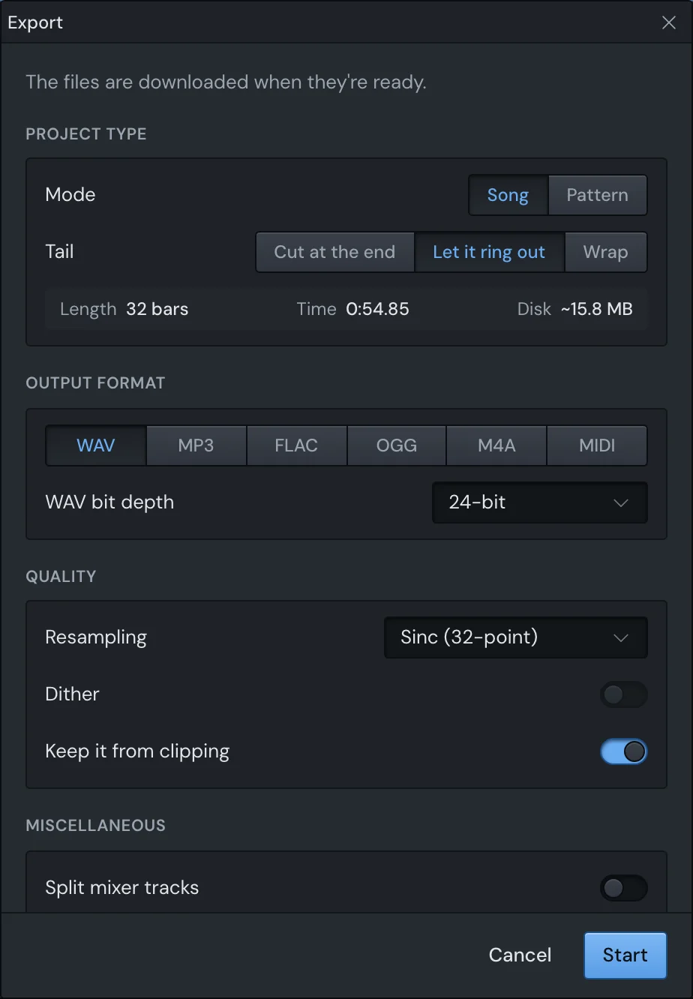

Finish
Export
Exporting renders your song to files you can play anywhere, as FL Studio does: a save dialog first, then a window of settings, then Start. Yen Studio renders as fast as your computer can, not in real time, and you can keep editing while it works.
Export a song
- Press ⌘R to export a WAV, or ⇧⌘R to export an MP3.
- In the save dialog, choose a folder and a name. It suggests the song's name and the folder you used last time.
- The export window opens. Check the settings below.
- Click Start.
You can also choose Export…, Export WAV… or Export MP3… in the File menu, or click Export at the top right. Export… keeps the formats you ticked last time. ⌘R and ⇧⌘R tick WAV or MP3 on top of them.
If you cancel the save dialog, nothing happens. The files go in the folder you chose, named after the name you gave. To put them somewhere else, click Change… at the top of the export window.

The window remembers its settings, in every song.
Song or pattern
Under Project type, Mode says what's rendered:
- Song renders the Playlist.
- Pattern renders the pattern that's showing, as the Channel rack and Piano roll play it.
If the Playlist is still empty, the window starts on Pattern, for this export only.
How much is rendered:
- In Song mode: the Playlist's time selection, if there is one. If not, the song up to the last time marker past its end, if there's one. If not, the whole song.
- In Pattern mode: the Piano roll's time selection, if there is one. If not, the whole pattern.
Under the choices, the window shows the Length in bars, the Time it lasts and roughly how much Disk space the files take. It also says when it's rendering a Time selection, or To the last marker.
The tail
Tail is what happens to sound still ringing at the end: a reverb, a delay, a long release.
- Cut at the end: the file stops exactly at the end. The last few milliseconds fade out, so it doesn't click.
- Let it ring out: the render carries on past the end until the sound dies away, for up to 30 seconds. This is the default.
- Wrap: for loops. What rings past the end is mixed back onto the start, and the file is exactly as long as the loop, so it plays round seamlessly.
Formats
Under Output format, click a format to tick it. Tick several, and one render writes them all.
| Format | What it is | Its setting |
|---|---|---|
| WAV | Uncompressed sound. | WAV bit depth: 16-bit, 24-bit or 32-bit float. |
| MP3 | Compressed, plays everywhere. | MP3 bitrate, up to 320 kb/s. |
| FLAC | Compressed without losing anything. | Bit depth (16-bit or 24-bit) and compression level. |
| OGG | Compressed. | OGG quality: higher sounds better and takes more space. |
| M4A | Compressed (AAC). | M4A bitrate. |
| MIDI | The notes, not the sound. | None. |
A FLAC file sounds the same at every compression level. A higher level only makes the file a little smaller and takes longer to write.
An OGG file's size depends on the music more than on the quality you choose, so the disk space shown for it is a guess.
The MIDI file has a track for each channel that plays, named after it, with the song's tempo changes and time signature. Notes of muted channels are left out.
Stems
Turn on Split mixer tracks under Miscellaneous to get a file for each Mixer track that has sound.
- They come from the same render as the mix, so they're in time with it and add up to it.
- Each is named after the song and its track: "My song - Drums.wav". Two tracks with the same name get "Drums" and "Drums 2".
- Include the mix adds the whole mix as well. Turn it off for the stems alone.
Stems need at least one audio format: they don't apply to MIDI.
Quality
- Resampling is how samplers and audio clips are read when they're pitched. The better the method, the slower the render. Choosing it here also changes it in Settings, where live playback has a setting of its own.
- Dither adds shaped noise when going down to 16 bits. You'd only hear the difference in very quiet passages. It's only available when a 16-bit WAV or FLAC is ticked.
- Keep it from clipping is on by default. Yen Studio mixes with headroom to spare, so your mix can go over full scale and still sound clean while you play it. A file can't hold that. With this on, a mix that goes over is turned down as a whole, every file by the same amount, so it sounds as it played. MP3, OGG and M4A files are kept a little further under, because they come out louder than they went in.
If your mix went over, the window says by how much once it's done, and how far the files were turned down. To export it louder, bring the master down and put a limiter on it, such as Y-L.
When Y-L is the last effect on the master, the export keeps its ceiling and its dither. Only a mix over full scale is turned down, and it isn't dithered a second time.
Where the files go
- The file you named in the save dialog is replaced if it's already there: the dialog asked you.
- If any other file of the export would replace one already in the folder, the whole set is numbered instead: "My song 2.wav", "My song 2 - Drums.wav". Nothing else is overwritten.
- Show in Finder when done opens the folder when the export ends.
While it renders
The song is exported as it was when you clicked Start. Keep editing: your changes aren't in the files.
- Playback stops while it renders, and comes back when it's done.
- The window says what it's doing: Rendering…, Rendering the tail…, then Encoding each file, with how far along it is.
- Click Stop to stop it. The files it had started are deleted. Closing the export window stops it too, so Escape doesn't close it while it's working.
When it's done, the window lists the files and their sizes, and how long it took. Click Show in Finder to see them, Export again to go back to the settings, or Done to close it. If the export window isn't open when it ends, a message says Exported, with the files' names and a Show in Finder button (unless Show in Finder when done already opened the folder).
If you're in another app when an export ends, Yen Studio's icon in the Dock bounces once.
What happens to plugins
The export uses your plugins as they're loaded in the song, with their current settings.
- Plugins are told they're rendering, not playing live, so those with a better-quality offline mode use it.
- Plugin windows are hidden while it renders and come back when it's done.
- The delay your plugins add is taken off, so the song starts on time, and the stems stay in time with the mix. See delay compensation.
- A channel or effect whose plugin or sample couldn't be loaded isn't heard. When the export ends, the window names them: "Not heard (their plugin or sample couldn't be loaded): …". See when a plugin fails.
Something here wrong or missing? Tell us.